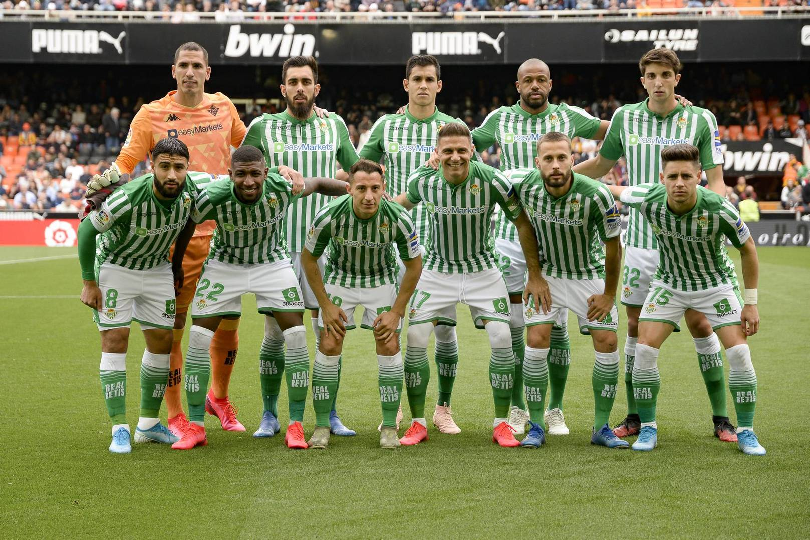
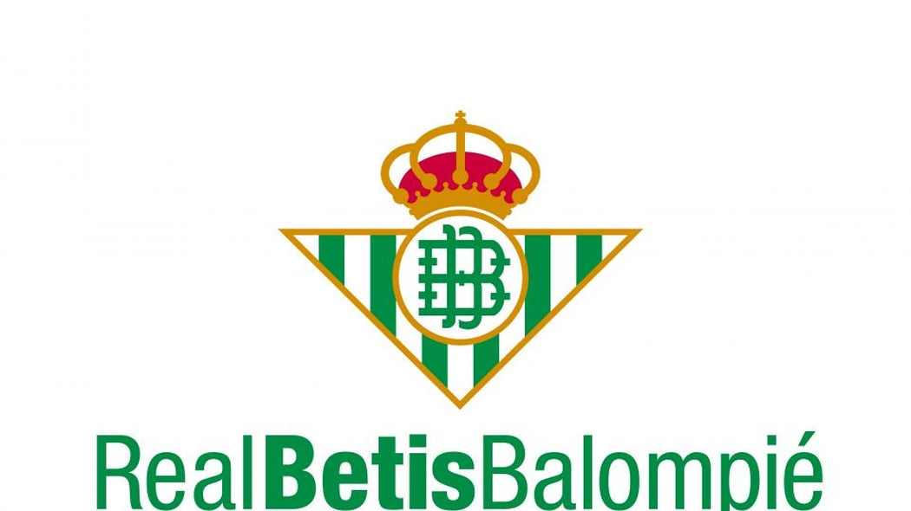

El Real Betis Balompié es un equipo de fútbol español ubicado en Sevilla. Es uno de los 9 clubes españoles que han conquistado la Liga y Copa Nacional.
Aunque su nombre no cause un eco tan grande como el Barcelona o Real Madrid, el Betis tiene unas jugadas bastantes exitosas que sí que dejarían un gran eco en el mundo del futbol.
La siguiente imagen es la representación de la alineación del Real Betis Balompié.
Y este es el logotipo del mismo
